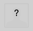
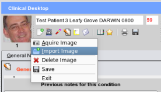

Patient Photo
The patient photo is displayed at the top left hand side of the clinical screen. If not photo exists then a blank place-holder is shown:

To add a photo you have two options
- Access the Patients module from the main sidebar menu see Adding a Photograph
- Right mouse click over the photograph in the clinical section:

A popup menu will give you options for adding, saving, deleting an existing photo.